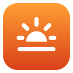

Late night thoughts
It's 11:40 PM and the screen still looks like noon. Every white page is a small sunrise.
BlueGreenRed
Blue light blocker for Windows
Night Light is a mild blue light filter: it only reduces blue light. Dozelight blocks it completely, down to candlelight and pure red, right from the taskbar, and follows your bedtime so your screen winds down with you.
14-day free trial with every feature · Windows 10 and 11 · 64-bit
Try it
This is a simulation in your browser. The real app tints your whole screen.
It's 11:40 PM and the screen still looks like noon. Every white page is a small sunrise.
Features
From daylight all the way to the glow of embers, with presets from Evening to Ember, and a slider that can snap to them.
Removes blue and green completely, leaving the gentlest light a screen can make. Dim the red to taste.
Auto mode warms the screen gradually through the evening, switches to red after bedtime and fades back before you wake.
Click the sun next to the clock for a panel with the switch, the slider and every setting. It stays open while you try things.
In deep red the arrow gets lost. Turn on a larger pointer and a soft halo, only when the screen is at its warmest.
Today's dusk and dawn, right in the panel. No location permission needed.
Black & White, Sepia, Invert Colors and Darkroom, plus High Contrast and Extra Dim for going darker than the lowest brightness.
Your tint comes back by itself after the lock screen, sleep and display changes, and new versions install with one click.
The whole app is 292 KB, with nothing to install alongside it. No tracking. It only goes online to check your license and look for updates.
Your night
Blue light is what reads as daytime. With Auto mode, Dozelight lowers it little by little as bedtime gets closer, then keeps only red light through the night, so a 3 AM glance at your screen stays gentle.
Set your own bedtime and wake-up time in the panel.

Early-access price
$9.99one-time purchase
Early-access price. It rises to $14.99 when early access ends. Early buyers help shape Dozelight: tell us what you'd like next.
Version 1.5.1 · 156 KB ZIP · Windows 10 and 11, 64-bit. Payments are handled securely by Polar. Installation guide → · What's new →
Installing
Dozelight isn't signed yet, so the first time you open it, Windows asks you to confirm. You only do this once. See the step-by-step guide with pictures →
Dozelight.exe to a folder where it can stay, for example Documents.Leave your email and get a short note when Dozelight for Windows gets something new.
FAQ
$9.99, once. That's the early-access price, and it rises to $14.99 when early access ends. You can try every feature free for 14 days first.
Yes. One license works on up to 3 computers in total, Windows or Mac, so you can use it on your PC and your MacBook with the same key.
The tint pauses until you enter a license key. Your settings stay as they are, so everything comes back the moment you activate.
Yes. Dozelight goes much further than Night Light, with warmer settings, red only, a gradual bedtime schedule and filters. Turn Night Light off so the two don't compete. See Night Shift vs Night Light vs f.lux vs Dozelight and how to make your screen red at night on Windows.
Darkroom inverts the screen and keeps only red, so pages turn black with red text: the gentlest way to read late at night. Extra Dim makes the screen darker than the lowest brightness setting. Both are in Filters, next to Black & White, Sepia, Invert Colors and High Contrast, and they work at any time of day.
Any PC with 64-bit Windows 10 or Windows 11. It also runs on Windows 11 laptops with Arm processors, through Windows' built-in emulation.
Dozelight isn't signed yet, so Microsoft Defender SmartScreen asks you to confirm once. Click More info, then Run anyway. The installation guide shows each step.
Windows limits how far apps can change the screen's colors. Dozelight can lift that limit once, with an administrator's approval, by setting the same Windows option other screen-tint apps use. You may need to restart Windows once afterwards.
With HDR turned on, Windows ignores color changes from apps, so turn HDR off in Settings → System → Display. If you use Night Light, try turning it off so the two don't compete. Remote Desktop and virtual machines usually don't allow color changes either.
No. The tint is applied on the way to the display, so screenshots, recordings and screen sharing keep their true colors.
No. Dozelight has no analytics or tracking. It goes online only to activate and occasionally check your license key, sending just the key and your PC's name to Polar, which runs our store, and once a day to look for updates. Dusk and dawn are estimated from your time zone, so it doesn't need your location either.
Both. A blue light filter like Night Light turns blue light down. Dozelight does that at its milder settings, and as a blue light blocker it switches the screen's blue light off completely: at 1900K and warmer, and in Red Only. You choose how far to go, or let Auto mode follow your bedtime.
Yes. At 1900K and warmer, and in Red Only, Dozelight switches the screen's blue light off completely. Milder settings reduce it, like a stronger Night Light. Auto mode reaches 1900K at your bedtime and keeps only red light through the night.
It takes away one thing that can push sleep later: bright, blue-rich screen light in the evening. Auto mode warms the screen gradually and keeps only red light after bedtime. Regular sleep times, winding down and a dark bedroom matter at least as much, so see our guide to screens, blue light and better sleep. Dozelight is a comfort tool, not a medical product.
No. Dozelight is a comfort tool for using your computer in the evening. It doesn't diagnose, treat or prevent any condition.
Open the Dozelight panel, turn off Open at Login and click Quit Dozelight. Your screen goes back to normal right away. Then delete Dozelight.exe.
Open License… in the Dozelight panel on the old PC and click Deactivate This PC. You can also manage your computers in the Polar customer portal linked in your receipt.
Dozelight checks for a new version once a day. When there is one, it shows in the panel and installs with one click. You can also choose Settings → Check for Updates in the panel at any time. Your settings and license stay.
Yes. If Dozelight isn't right for you, email us within 14 days of your purchase for a full refund. See the refund policy.
iPhone and iPad don't allow apps to tint the whole screen. But they have built-in settings that come close: see our free guide to a red screen at night on iPhone and iPad.